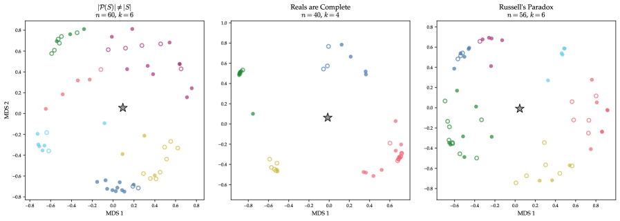

Ablation and the Meno: Tools for Empirical Metamathematics
Exploring the space of possible formal proofs for a theorem, and understanding how constraining available tactics changes proof strategies, lacks systematic tools. The relationship between human proofs and machine-generated alternatives is poorly characterized.
Meno is an LLM-based autoformalizer that takes a Lean theorem statement (optionally with an informal proof) and systematically searches for formal proofs via an MCP-orchestrated agent loop. Tactic ablation uses Lean metaprogramming to selectively disable tactics (e.g., Classical.choice), forcing alternative proof strategies. The resulting proof populations are embedded using Goedel Prover and analyzed via multidimensional scaling.

On three theorems from Tao's Analysis I, Meno produced 25-36 proofs per theorem under each condition. The proof populations lie on 1-2 dimensional submanifolds of the 5140-dimensional embedding space (2d MDS correlation r > 0.87), far from human-authored proofs. Ablating Classical.choice still yields comparable numbers of proofs (26-31) with distinct clustering patterns.
| Theorem | Plain (n) | Ablated (n) | 2d MDS r | ||||
|---|---|---|---|---|---|---|---|
| Russell's Paradox | 36 | 29 | 0.912 | ||||
| X | < | 2^X | 36 | 31 | 0.876 | ||
| Reals are complete | 25 | 26 | 0.965 |